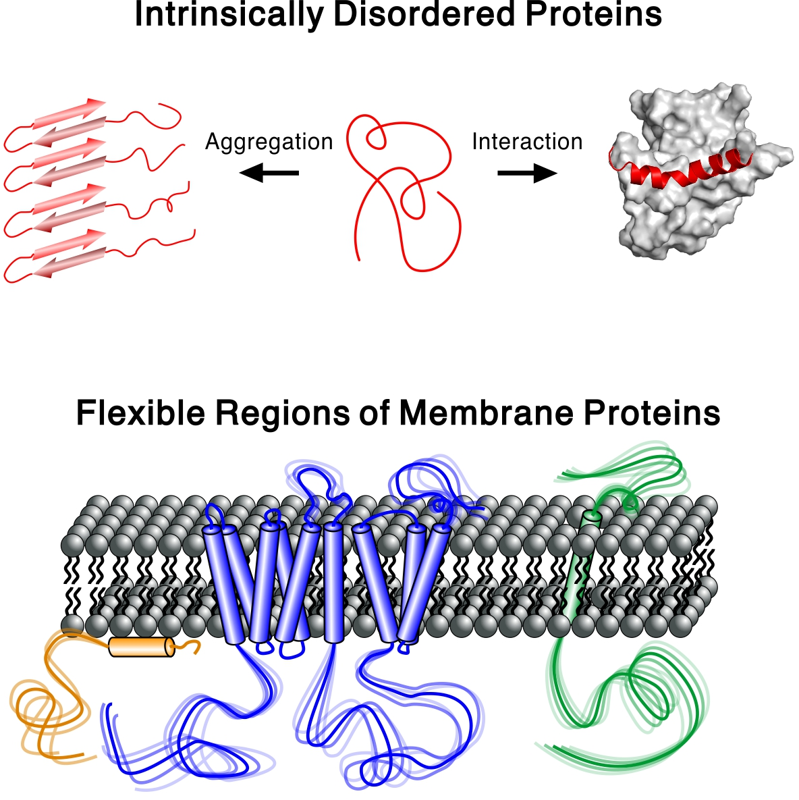
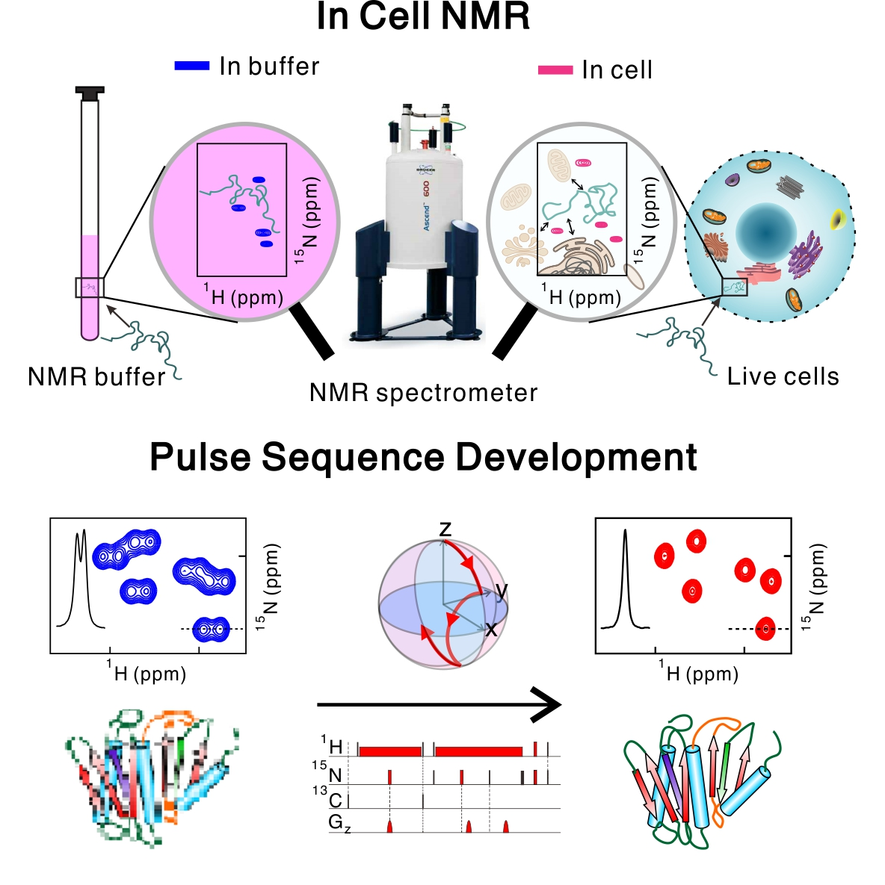
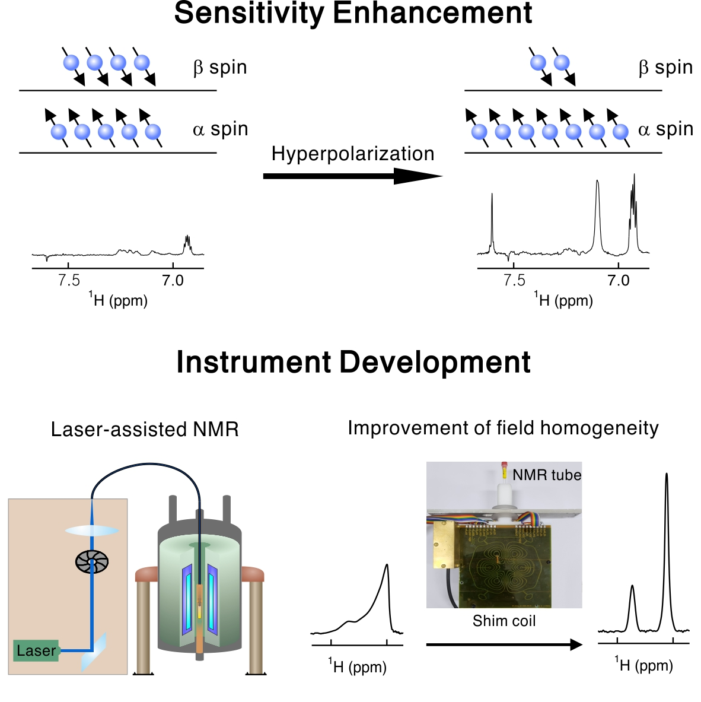

Research Area
-

- Intrinsically Disordered Proteins
- Not all proteins have a well-defined structure. In fact, half of all mammalian proteins are either completely or partially disordered. However, the molecular details of these intrinsically disordered proteins (IDPs) are far less explored than those of well-ordered proteins, mainly because the tools to investigate IDPs are not well established. We study IDPs involved in neurogenerative diseases and focus on the flexible regions of membrane proteins, whose importance is often neglected in structural biology. Furthermore, we develop NMR methods to accurately characterize IDPs in solution.
-

- Solution NMR Methods
- Imagine watching a high-resolution movie of cellular processes in live cells. We aim to investigate the structure and dynamics of proteins in live mammalian cells at atomic resolution. Solution NMR provides a unique opportunity to perform real-time structural biology in a physiological context, to gain a deeper mechanistic understanding of cell function and disease. In addition, we are also developing NMR pulse sequences, which are collections of magnetic-field pulses that control the quantum state of nuclear spins. The newly developed pulse sequences help investigate new aspects of biomolecules at high accuracy.
-

- Instrumentation
- The main drawback of NMR spectroscopy is its low sensitivity. Historically, breakthroughs in sensitivity enhancement have greatly expanded NMR/MRI applications. However, it is challenging to enhance NMR sensitivity particularly in solution, where a lot of academic and industrial needs are present. We develop a laser-driven approach and build new instruments to enhance NMR sensitivity in solution. In addition, we are in the process of building a low-field NMR spectrometer, which will be used as a testbed to implement new hardware design. We believe that our research will continuously extend the limit of what can be achieved by NMR.